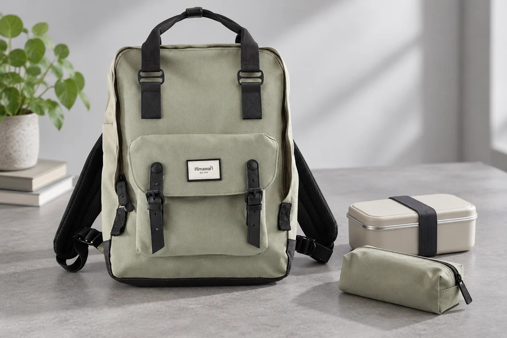

비슷한 파우치, 이름과 겉모양을 연결하기

충전기를 찾으려고 파우치를 열었는데 문구류가 들어 있습니다. 용도별로 잘 나누어도 겉모양이 비슷하면 어느 묶음인지 기억하기 어려울 수 있습니다. 새 파우치를 고르기 전에 지금의 내용물에 어떤 이름을 붙였는지, 밖에서는 무엇으로 구별하는지 나누어 봅니다. 물건을 분류하는 기준과 원하는 파우치를 고르는 단서가 연결되어 있어야 실제로 찾는 시간이 줄어듭니다.
‘기타’ 묶음에 자주 찾는 물건이 있다면
파우치 안의 물건을 꺼내 함께 사용하는 장면을 생각합니다. 충전기와 연결선처럼 같은 작업에 쓰는 물건을 묶으면 ‘충전’이라는 이름을 붙일 수 있습니다. 필기구와 지우개를 함께 쓰면 ‘문구’가 단서가 됩니다. 모든 물건을 재료나 크기만으로 나누기보다 실제로 한꺼번에 꺼낼 것이 무엇인지 보면 이름을 정하기 쉽습니다. 그 이름이 자신이 찾는 상황에서 떠오르는 말인지도 확인합니다.
‘기타’ 파우치가 커졌다면 자주 꺼내는 물건을 먼저 봅니다. 다른 파우치와 함께 쓰는 물건인데 임시로 넣은 것인지, 새로운 용도가 생긴 것인지 구별합니다. 분류표를 완벽하게 만들기보다 실제로 여러 번 찾은 물건의 위치를 정합니다. 그 묶음을 따로 만들었다면 남은 기타 물건도 이번 외출에 필요한지 고릅니다. 이름이 붙어도 내용물이 계속 달라지면 겉의 단서가 약해질 수 있습니다.
파우치 이름은 짧고 자신의 쓰임을 떠올릴 수 있으면 됩니다. 물건 하나의 상표를 이름으로 쓰면 구성품이 바뀌었을 때도 그 이름이 맞는지 다시 봐야 합니다. 여러 사람이 함께 쓰는 소품이라면 서로 읽을 수 있는 말로 정합니다. 개인적으로 쓰는 파우치에 세부 약품명이나 불필요한 개인정보를 크게 표시할 필요는 없습니다. 바깥에서 구별할 만큼의 용도를 고르면 됩니다.
이미 다른 모양을 단서로 쓴다
납작한 네모 파우치와 둥근 필통처럼 원래 형태가 다르면 그 차이를 활용합니다. 어떤 모양이 어느 용도인지 정하고 실제 내용물을 넣은 뒤에도 구별되는지 봅니다. 모두 비슷하게 부풀도록 많이 채우면 외형의 차이를 사용하기 어려울 수 있습니다. 물건을 줄이거나 묶음을 바꾸어 원래 형태를 유지할 수 있는지 생각합니다. 새 도구를 더하기 전에 지금 가진 모양을 읽는 준비입니다.
색이 비슷하면 지퍼 위치나 크기처럼 눈으로 구별할 다른 부분을 봅니다. 어두운 안쪽에서 찾기 어렵다면 집에서 가방을 내려놓고 원하는 파우치를 골라본 뒤 눈으로 맞는지 확인할 수 있습니다. 촉감이 다르다고 언제나 구별된다고 단정하지 않고 실제 선택을 대조합니다. 잘 맞지 않는 한 쌍이 있다면 그 둘의 위치를 바꾸거나 하나에 짧은 용도 표시를 더하는 방법을 고릅니다.
Himawari No.1010에 여러 소품 묶음을 준비할 때에는 파우치 이름을 가방의 실제 위치와 연결합니다. 충전 묶음을 어디에서 꺼내는지, 문구 묶음은 어떤 면을 잡는지 정합니다. 가방을 바꿔도 파우치의 이름과 역할은 유지할 수 있습니다. 같은 높이의 포켓을 찾기보다 현재 가방에서 그 용도에 필요한 접근을 정하면 구분 단서를 다시 전부 만들 필요가 줄어듭니다.

이름표 자리가 원래 마련되어 있다면 짧은 용도를 적어 사용할 수 있습니다. 별도 접착 표시를 쓰려면 파우치 소재에 맞는지 관리 안내를 봅니다. 긴 끈을 붙여 구별하려면 지퍼 동작과 보관에 걸리는 부분도 확인합니다. 이름을 더 잘 보이게 하려다 다른 물건에 걸리는 소품을 늘릴 필요는 없습니다. 서로 헷갈리는 대상에 필요한 표시만 더하는 쪽으로 준비할 수 있습니다.
한 번에 바꿀 구분은 한 쌍부터
파우치의 위치와 이름, 내용물을 모두 동시에 바꾸면 새 구조를 다시 기억해야 합니다. 며칠 사용하며 실제로 잘못 골랐던 한 쌍부터 조정해볼 수 있습니다. 가령 비슷한 검정 파우치 둘을 쓰는 경우에는 하나에만 표시를 더하고 두 용도를 유지하는 방식을 제안할 수 있습니다. 이는 실제 사용 결과가 아니라 비교할 변화의 범위를 정하는 예입니다. 바뀐 뒤에는 자신이 읽는 단서가 무엇인지 살펴봅니다.
원하는 물건을 꺼낸 뒤에는 그 물건이 돌아갈 파우치도 같은 것으로 유지합니다. 잠깐 다른 파우치에 넣었다면 나중에 기억하기보다 정리할 때 제자리로 옮깁니다. 이름표는 충전이라고 되어 있는데 문구가 섞이면 겉에서 구별해도 내용물을 찾기 어렵습니다. 분류와 식별은 이 지점에서 다시 연결됩니다. 내용물이 바뀐 파우치는 이름이 여전히 맞는지도 확인합니다.
파우치를 함께 쓰는 날에는 개인 묶음과 공용 묶음을 나눌 수 있습니다. 누구의 소품인지 표시할 때에도 밖에 보여줄 필요가 있는 정보만 고릅니다. 다른 사람이 위치를 바꾸었으면 새 배치를 알리고, 이전 이름과 다른 용도를 맡긴 파우치는 그 변화를 함께 정리합니다. 모든 사람이 같은 촉감을 구별할 수 있다고 가정하지 않고 실제로 읽는 단서를 공유하면 필요한 설명도 짧아집니다.
가방을 비우는 날에는 쓰지 않은 파우치를 골라봅니다. 비슷한 역할의 묶음이 늘었다면 함께 사용할 수 있는지 내용물과 실제 부피를 봅니다. 빈 파우치를 계속 넣고 다닐 이유가 있는지도 생각합니다. 분류를 줄이거나 바꾸었다면 남은 이름을 현재 용도에 맞춰 정리합니다. 사진에서 가지런하게 보이는 개수보다 필요한 물건을 어느 묶음에서 찾는지 읽히는 구조가 목적에 맞습니다.
다음 외출에서 원하는 파우치를 골랐다면 내용물과 이름이 맞는지 확인하고 사용 뒤 되돌립니다. 다시 잘못 골랐을 때에는 기억이 부족하다는 말보다 어떤 두 단서가 비슷했는지 봅니다. 모양과 위치, 용도 표시 가운데 바꿀 항목을 골라 조정하면 됩니다. 파우치의 역할이 유지되고 겉에서 알아볼 단서가 남으면 같은 가방 안에서 소품 묶음을 더 쉽게 이어 사용할 수 있습니다.